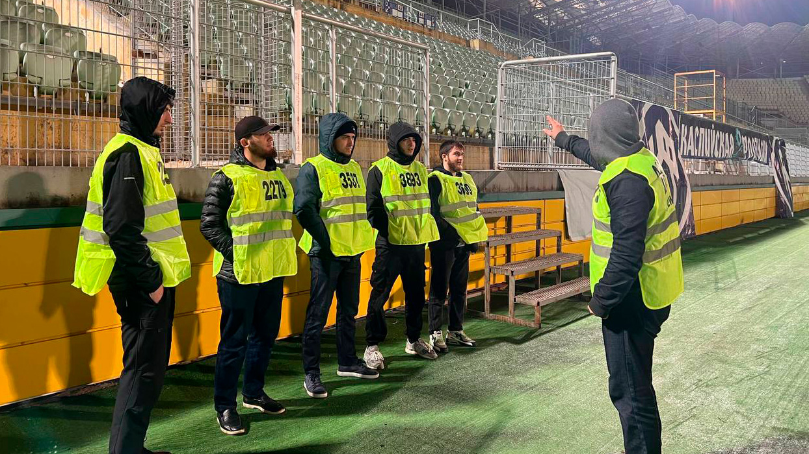
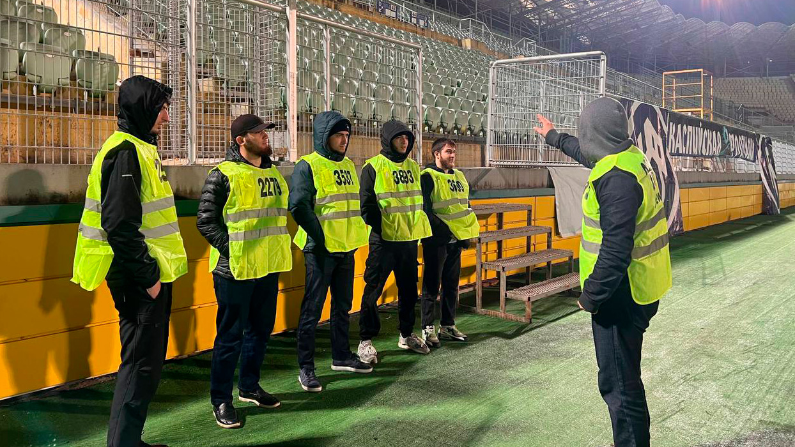
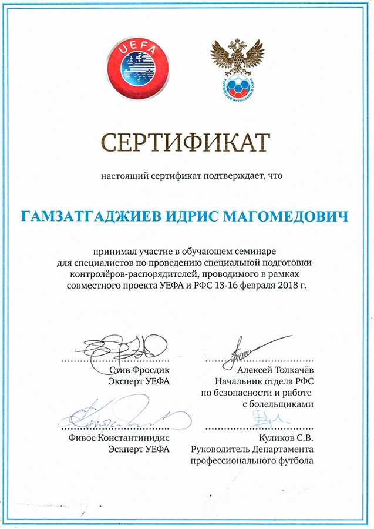

Мы можем организовать специальную подготовку контролёров-распорядителей в соответствии с передовым опытом ФИФА и УЕФА в области безопасности и в соответствии с требованиями законодательства Российской Федерации. Наши высококвалифицированные специалисты проведут семинары и тренинги для Ваших сотрудников.
 

Специальная подготовка контролеров-распорядителей осуществляется на основании договоров о делегировании прав с РФС по программам, утверждённым данными общероссийскими спортивными федерациями.
Преподаватели Defence имеют большой опыт проведения специальной подготовки контролеров-распорядителей, в том числе в различных регионах Российской Федерации, а также соответствуют требованиям, установленными приказом Министерства спорта Российской Федерации №997 «Об утверждении требований к организациям, осуществляющим специальную подготовку контролеров-распорядителей и (или) выдачу и учет удостоверений контролеров-распорядителей» от 30.10.2015 г. и приказом Министерства спорта Российской Федерации №1327 «О внесении изменений в приказ Министерства спорта Российской Федерации от 30 октября 2015 г. №997 «Об утверждении требований к организациям, осуществляющим специальную подготовку контролеров-распорядителей и (или) выдачу и учёт удостоверений контролёров-распорядителей» от 22.12.2016 г., и имеют сертификаты об участии в семинарах для специалистов по подготовке контролёров-распорядителей, проводимых УЕФА и РФС.
Удостоверение контролера-распорядителя (далее - Удостоверение) подтверждает право контролеров-распорядителей на принятие мер в соответствии с законодательством Российской Федерации по обеспечению общественного порядка и общественной безопасности при проведении официальных спортивных соревнований. Удостоверение выдается общероссийской спортивной федерацией или организацией, осуществляющей специальную подготовку контролеров-распорядителей по договору с такой федерацией (далее — Организация), в течение 10 рабочих дней после прохождения гражданами специальной подготовки контролеров-распорядителей и итоговой аттестации, а также получения ими документа, подтверждающего прохождение такой подготовки.
Если Удостоверение выдается Организацией, копия такого Удостоверения в течение 10 рабочих дней со дня его выдачи, направляется в общероссийскую спортивную федерацию.
Срок рассмотрения не более 5 рабочих дней со дня их получения.
В соответствии с частью 2 статьи 20.2 Федерального закона "О физической культуре и спорте в Российской Федерации" и Приказу Министерства спорта РФ от 13 апреля 2017 г. N 346 "Об утверждении порядка прохождения специальной подготовки физическими лицами, желающими осуществлять деятельность в качестве контролеров- распорядителей" контролерами- распорядителями не могут быть:
Удостоверение выдается контролеру-распорядителю либо его уполномоченному представителю на основании доверенности, оформленной в порядке, установленном законодательством Российской Федерации (далее — Доверенность). Для получения Удостоверения контролер-распорядитель предъявляет документ, удостоверяющий личность. В случае получения Удостоверения уполномоченным представителем контролёра-распорядителя, кроме документа, удостоверяющего личность, представляется Доверенность.
В случае утраты или порчи Удостоверения контролеру-распорядителю выдается дубликат Удостоверения. Для получения дубликата Удостоверения контролер-распорядитель должен:
Заявление о выдаче дубликата Удостоверения представляется в подлинном экземпляре и подписывается лично контролером-распорядителем. Дубликат Удостоверения выдается контролеру-распорядителю либо его уполномоченному представителю в течение 15 рабочих дней со дня поступления в Организацию заявления о выдаче такого дубликата.
Общероссийские спортивные федерации осуществляют учет выданных Удостоверений в журнале учета выдачи Удостоверений (далее — Журнал учета) на бумажных носителях и (или) в электронном виде в соответствии с требованиями законодательства Российской Федерации в области персональных данных.
Журнал учета должен быть прошит, листы пронумерованы, сведения о количестве листов заверены подписью руководителя общероссийской спортивной федерации (лица, исполняющего его обязанности) и оттиском печати общероссийской спортивной федерации. Журнал учета хранится в общероссийской спортивной федерации.
Устав Defence
Приказ Министерства спорта Российской Федерации №346 «Об утверждении порядка прохождения специальной подготовки физическими лицами, желающими осуществлять деятельность в качестве контролёров-распорядителей» от 13.04.2017 г.
Приказ Министерства спорта Российской Федерации №161 «Об утверждении порядка выдачи и учёта удостоверений контролёров-распорядителей и формы удостоверения контролёра-распорядителя» от 10.03.2023 года
Федеральный закон от 4 декабря 2007 г. N 329-ФЗ «О физической культуре и спорте в Российской Федерации».
Программа специальной подготовки контролёров-распорядителей РФС
Процедура прохождения специальной подготовки контролера-распорядителя компании «Defence».
Приказ Министерства труда и социальной защиты Российской Федерации №357н «Об утверждении профессионального стандарта контролёр-распорядитель» от 13.04.2017 г.